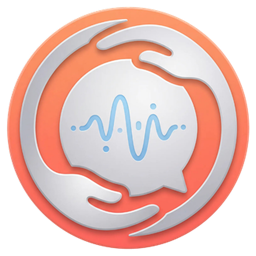

SilverChat 愛耆易以廣東話與長者對話，提醒服藥、記錄健康數據，並於偵測到異常情況時即時通知家人與社工。科技，亦可以充滿人情味。
從清晨問候到深夜求助，易仔時刻陪伴在側。
以廣東話與 AI 伙伴「易仔」對話，查詢天氣、收聽新聞、拍照提問；易仔亦會主動開啟話題，讓對話不致冷場。
可為每種藥物自訂服藥時間表，屆時以語音提醒；服用後一按即記錄，家人隨時查閱服藥進度。
血壓等健康數據以大字顯示，並自動標示正常範圍，變化趨勢一目了然，覆診時向醫生說明更為方便。
一按 SOS 即時發出警報，家人與社工同步收到通知，於關鍵時刻爭取先機。
訴說往事，珍藏一片片「時光碎片」——時光牆逐片典藏、回憶地圖串連足跡、人生傳記自動成稿，並可生成碎片卡與家人分享。
覆診日期、時間與地點逐項記錄，並提前作出提醒，以免錯過；家人亦可代為安排。
長者訴說往事，易仔以一問一答的方式陪伴傾談；待內容足夠完整，即收錄成一片時光碎片，整齊陳列於時光牆。
同一帳戶體系，三種身份各司其職，資訊同步無礙。
字體特大、按鍵寬闊，開口說話即可操作。
即使不在身邊，亦能掌握長者的狀況。
個案管理，更有系統。
基準字級達 26px，提供小、中、大三檔一按切換，介面所有文字等比放大，毋須老花眼鏡亦能清晰閱讀。
離線語音識別能準確辨識廣東話，語音合成輸出親切回應；即使不諳打字，同樣能完整使用各項功能。
系統持續監察使用狀態，一旦偵測異常，警報即時傳送至家人與社工，守護時刻不斷線。
奶油底色配暖陽琥珀，配備高對比大型按鈕，每個頁面只專注一件事；毋須學習，拿起即可運用自如。
未安裝 App 都可以先拎個帳號。揀返你想登入嘅身份（長者／家人／社工），系統會即刻分配一個專屬帳號同密碼畀你。

Android v3.1.1 Beta 測試版現已開放。此為測試版本，功能尚未完全穩定，使用時如遇上任何問題，歡迎透過 GitHub Issues 向我們回報。